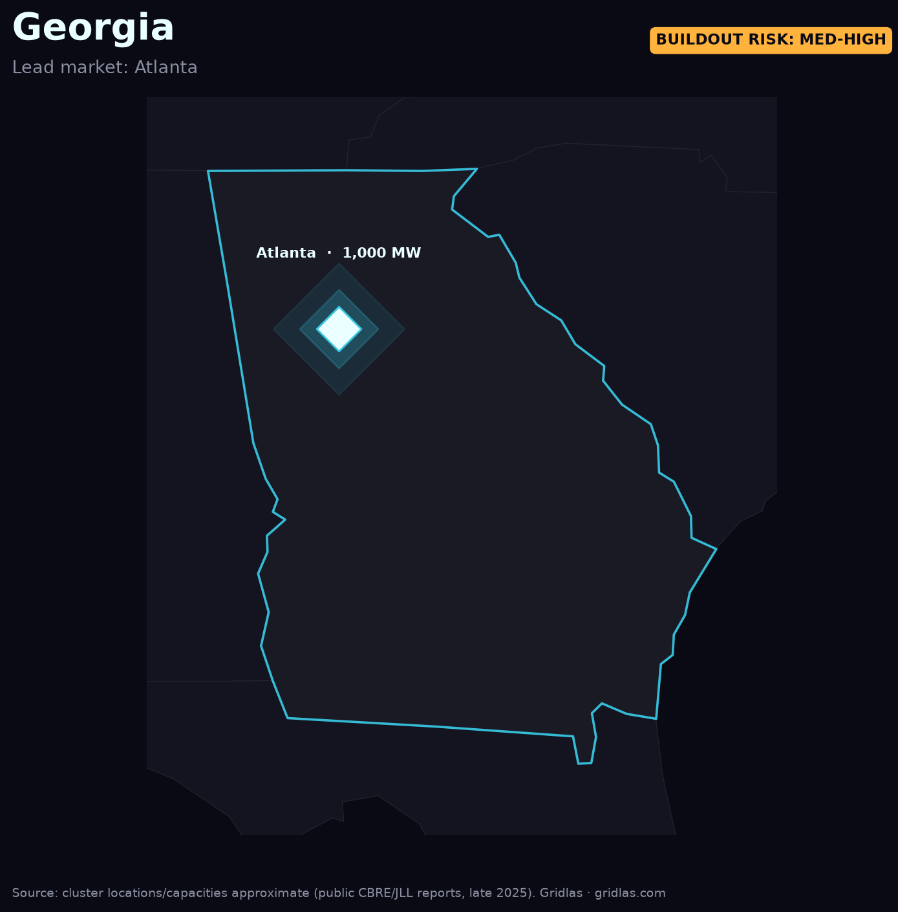

Home / Data centers by region / Atlanta, Georgia
The fastest-rising major market in the country — and a utility load forecast that data centers rewrote almost overnight.
Metro Atlanta now operates about 1,800 MW — second only to Northern Virginia — and has roughly 2,880 MW under construction, the largest construction pipeline of any U.S. market. Growth corridors run through Douglas County, Fulton, and Newton County, where multi-hundred-megawatt campuses are now routine.

That surge reshaped Georgia Power's planning: the utility's load forecasts were revised sharply upward, with data centers the dominant driver. The state's nuclear base (Vogtle's new units) helps, but the same interconnection-timing problem applies — firm capacity has to show up on schedule.
Georgia is the template for how a Southeast grid with cheap power and aggressive incentives absorbs a demand shock. Its construction pipeline is a leading signal for where operating capacity — and the next round of grid strain — lands in 2026–27.
Get the rankings + maps. The Gridlas report covers Atlanta and four other regions in depth, with high-res maps and the underlying dataset — from public EIA, LBNL & ERCOT data.
Get the report →Prefer the free 3-page summary first? The 8 findings and the chart that explains the AI power crunch — straight to your inbox.
No spam. Unsubscribe anytime.
Atlanta operates about 1,800 MW of data-center supply — #2 in the U.S. — with roughly 2,880 MW more under construction, the largest construction pipeline of any U.S. market (CBRE, H1 2026).
Demand is outrunning forecasts — utilities are now planning around AI data-center load rather than reacting to it.
Try the free power & water estimator on this market → · Share on X →